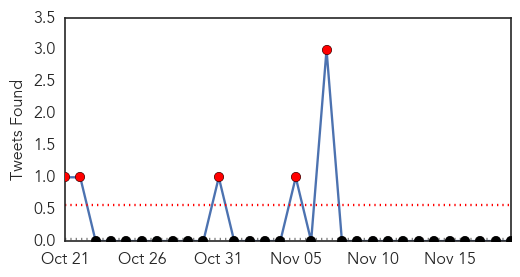
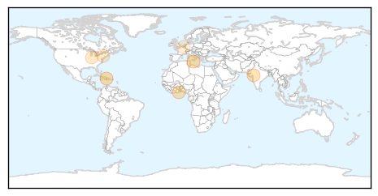
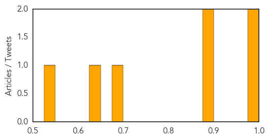

Influenza
30-Day Web Trend
2 alerts, 0 warnings

30-Day Twitter Trend
0 alerts, 0 warnings

Article Locations


Article Confidences

Top Articles:
- 0.997
- County health department recommends flu shots
- 0.995
- Lucas Co. man, 79, may be season's first flu-related death
- 0.984
- WHO braces for bird flu spread in European poultry
- 0.959
- Work continues to find source of new poultry flu outbreak
- 0.945
- Toledo News Now, News, Weather, Sports, Toledo, OH
- 0.939
- Delaware has first flu-related death of season
- 0.922
- Duck farm first noticed signs of bird flu almost two weeks ago when egg production dropped
- 0.842
- Culling of thousands of ducks starts on farm hit by bird flu
- 0.833
- EU prohibition of movements to sell live poultry, eggs, poultry meat — BlackSeaGrain
- 0.796
- Ukraine bans poultry from UK, Germany, Netherlands
- 0.685
- New i-sense collaboration to improve monitoring of UK flu hotspots
- 0.654
- Europe on alert as avian flu spreads
- 0.598
- UT researchers working on anti viral drug to combat flu
- 0.598
- Poultry producers urged to ‘remain vigilant’ following bird flu outbreak in Yorkshire
- 0.575
- Health minister reverses decision to cancel seniors flu clinics
- 0.544
- Could the cold snap give you a cold?
Top Tweets:
-
No tweets found for Nov 19, 2014
Cholera
30-Day Web Trend
1 alerts, 0 warnings

30-Day Twitter Trend
5 alerts, 0 warnings

Article Locations
Article Confidences
Top Articles:
- 1.000
- Don't Forget Cholera
- 0.997
- Haiti cannot wait 40 years
- 0.886
- Two water contamination deaths: Borewell culprit in Sankheda tragedy
- 0.885
- Ghana, Business Advice, Jobs, News, Business Directory, Real Estate, Finance, Forms, Auto
- 0.677
- GLAAS 2014 Report: Investing in Water and Sanitation: Increasing Access, reducing Inequalities, UN-Water Global Analysis and Assessment of Sanitation and Drinking-Water - World
- 0.632
- UN reveals major gaps in water and sanitation – especially in rural areas
- 0.546
- Two Billion People Use Water Contaminated By Faeces-UN
Top Tweets:
-
No tweets found for Nov 19, 2014